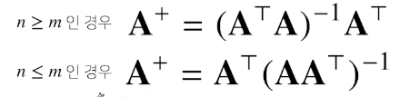
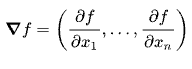

딥러닝에 필요한 수학적 지식
벡터
벡터란 뭡니까? 스칼라 다음의 차원을 표시하기 위한 수학 도구입니다. $ L_1$ 노름은 변화량읠 절대값을, $L_2$ 노름은 유클리드 거리를 말합니다
행렬
행렬에 대해서 알아봅시다. 행렬곱은 행과 열의 조건을 맞춰야 연산가능합니다. 행렬의 곱은 교환법칙이 성립하지 않으니 유의해야 합니다.
파이썬에서는 @ 기호를 통해 행렬의 곱을 지원합니다. np.inner 도 가능합니다.(자동 transpose 지원)
역행렬은 곱의 연산을 했을 때 항등행렬이 나오는 행렬을 말합니다. 곱의 역원을 의미합니다.
역행렬은 선형사상과 필요충분조건입니다. (선형대수학에 대한 지식이 필요합니다.) np.linalg.pinv 모듈을 이용해서 구할 수 있습니다
유사 역행렬에는 무어펜로스(Moore-Penrose) 역행렬이 있습니다. 왜냐하면 역행렬을 구하는 것이 쉽지 않기 때문입니다.

행렬은 왜 배우는 것일까요? 연립방정식, 선형회귀 분석에 응용됩니다.차원이동 연산 을 쉽게 만들어 주기 때문이죠.
딥러닝을 제대로 이해하기 위해선 ‘선형대수학’을 수준 높게 학습해야 합니다.
사이킷런의 선형회귀 모델과 무어펜로즈의 선형회귀를 직접 구현보시는 건 어떻습니까?
경사하강법 (Gradinet Descent)
경사하강법에 대해서 알아봅시다. 우선 기초적인 미분에 대해서 알아볼까요?
미분
먼저 미분에 대해서 알아봅시다.
미분이란 접선의 기울기를 말하죠.
sysmpy.diff 모듈을 이용하여 미분계산이 가능합니다.
이를 통해서 우리는 주어진 input 데이터가 어느 차원에서든 그 점에서 증가하는가, 감소하는가를 알 수 있습니다.
어느 차원으로 확장한다는 것은 변수를 스칼라가 아닌 벡터와 텐서를 사용한다는 것입니다.
좋습니다. 이제 경사하강법을 알아볼까요? 경사하강법이란 기울기가 감소하는 방향으로 쭈욱 가다 보면 언젠가 평지를(극소값)을 만날 것입니다. 컴퓨터에서 미분값이 0 인 곳을 찾기란 쉽지 않으므로 아주 작은 값(오메가) 보다 더 미분 값이 작으면 종료하면 됩니다. 이것이 간략한 설명입니다. 이 때 중요한 것은 어느 만큼의 보폭으로 갈 것이냐입니다. 이것은 하이퍼 파라메터로 즉 학습률입니다. 변수가 스칼라가 아니라 벡터라면 편미분을 하면 됩니다. 모든 데이터를 사용하는 것은 고전적인 방법입니다. 이것은 성능이 좋지 않고 하드웨어에 부담이 갑니다. 시간도 많이 걸리죠. 조금의 데이터만 이용해서 경사를 갱신하는 것을 SGD 라고 합니다. 이 방법은 최근 많이 사용하는 방법입니다.
그레디언트 벡터(gradient Vector)
함수의 벡터 변수 별로 편미분을 계산한 함수를 말합니다. 계산식은 이렇게 됩니다.  그레디언트 벡터에 - 를 붙여서 이동하게 되면 가장 빨리 극소값을 향해 가게 되는 겁니다.
그레디언트 벡터의 `norm` 값을 구해서 일정 값보다 작게 되면 학습을 종료하는 방식으로 극소값을 찾으면 된다.
(계속 내려가다가 더 이상 변화가 없는 것 같아. -> 일단 멈춰!)
선형회귀 모델에서 경사하강법 적용해보기
선형 모델을 구할 때 무어 펜로즈 행렬을 사용할수 도 있습니다.
하지만 우리는 무어펜로즈 행렬을 곱해서 나온 우변 식을 경사하강법을 하지 않고 오직 경사 하강법을 적용시켜 극소값이 되는 지점을 찾는 것이다.
$y-y$ 의 값을 미분해서 학습률을 곱해 에포크동안 최소화 지키다는 것입니다.
직접 계산해봅시다. 학습률과 학습횟수를 적절하게 선택했을 때만 수렴을 보장할 수 있습니다. 비선형회귀의 경우, 볼록하지 않기 때문에 수렴을 보장할 수 없다. (왜 불가능한가? 고민해봅시다.)
미니배치 확률적 경사하강법(SGD)
데이터를 일부 사용해서 경사하강법을 적용하는 방식을 말합니다. 경험적으로 좋다는 것이 밝혀져 있습니다. SGD 가 경사하강법보다 낫다는 것이 실증적으로 검증되었다. 데이터를 나눠서 epoch 를 반복하여 학습하는 것을 말합니다. 데이터를 일부로 사용하기 때문에 목적식이 매번 달라집니다. 학습률, 미니배치사이즈가 하이퍼 파라메터입니다.
딥러닝 학습방법
이제 비선형모델인 신경망을 도전해봅시다.먼저 소프트 맥스 함수 부터 알아보지요.
소프트맥스
모델의 출력을 확률로 해석하여 확률 벡터로 변환하는 함수입니다. 가장 큰 값이 예측값이 되는 것입니다. 신경망은 선형모델과 활성함수를 합성한 함수입니다. 이러한 layer들은 잠재벡터들의 누적하게 되고 마지막 공간에 활성화 함수를 적용하는 것입니다.
활성함수
R 위에 정의된 비선형 함수입니다. 활성함수를 쓰지 않으면 딥러닝은 선형모형과 차이가 없습니다. 대표적으로 Relu, tanh, sigmoid 가 있습니다. 순전파는 주어진 신경망 계산을 하는 것을 말합니다. 이 때 우리는 왜 여러 계층을 사용하는 걸까요? 왜 층을 여러개 쌓는가? 수학적으로 계층이 3개 이상만 있으면 임의의 연속함수를 근사할 수 있다는 것이 증명되어 있다. ‘세계’를 표현할 수 있는 것이죠. 역전파는 경사하강법을 이용해서 가중치를 업데이트 하는 것을 말합니다. 위층부터 저층으로 그레디어트 벡터를 전달해야 함(연쇄법칙) 메모리에 저장해서 사용해야 합니다. tensorflow, pytorch 에는 자동 구현되어 있습니다.
확률론
확률론은 딥러닝에서 대단히 중요합니다. 딥러닝은 확률론 기반의 기계학습 이론에 바탕을 두고 있다.
확률론이 중요한 이유를 알아봅시다. 분류 문제 에서 예측 오차의 분산을 최소화하고 교차 엔트로피 문제에서 모델 예측의 불확실성을 최소화하는데 쓰입니다. 확률 분포는 데이터의 초상화입니다. 확률은 면적입니다. 이산 확률 변수에서는 시그마 급수, 연속 확률 변수에서는 연속 확률을 적분하는 것을 말합니다. 목표는 데이터의(표본) 확률 분포를 가지고 -> 실제 (모집단)의 확률 분포를 추정하는 것입니다.
몬테카를로 샘플링은 데이터(샘플링)를 통해 기댓값을 계산하는 방법을 말합니다. 대수의 법칙을 통해 수렴성을 보장합니다.
- 주변확률분포
- 통계값(모수)
- 기댓값
- 분산
- 첨도
- 공분산
- 조건부확률
import numpy as np
def monte(fun, low, high, sample_size=100, repeat=10):
int_len = np.abs(high - low)
stat = []
for _ in range(repeat):
x = np.random.uniform(low=low, high=high, size=sample_size)
fun_x = fun(x)
int_val = int_len * np.mean(fun_x)
stat.append(int_val)
return np.mean(stat), np.std(stat)
- 주어진 함수
def f_x(x):
return np.exp(-x**2)
print(monte(f_x, low=-1, high=1, sample_size=1000, repeat=100))
통계학
통계적 모델링 확률분포를 추정하는 것입니다. 그 중 모수를 추정한다는 것은 확률분포의 특성값(모수)를 추정한다는 것이죠. 모수적 방법론은 특정 확률 분포를 가정 한 후 모수를 추정하는 것이며, 비모수적 방법론은 가정 없이 추정하는 것입니다.
모수적 방법론의 과정은 다음과 같은 순서가 될 것입니다.
데이터 관찰 -> 확률 분포 가정 -> 평균, 분산 추정 -> 모수 집단 추청
데이터를 관찰하고 확률 분포를 가정합니다.
- 베르누이 분포
- 카테고리 분포
- 베타 분포
- 감마분포, 로그정규분포
- 정규분포, 라플라스분포
가 있습니다. 하나 하나가 공부해 볼 가치가 있는 것들이죠.
중심극한정리는 표뵨 평균의 표집분포는 N이 커질수록 정규분포를 따른다는 것을 말합니다.
표집분포는 통계량의 확률분포를 말합니다.
최대가능도 추정법
매우 중요합니다. 최대가능도 추정법에 대해 공부해봅시다.
가능도란 무엇일까요? 모수 쌔타 분포에서 데이터 x 를 발견할 가능성. 을 말합니다.
그렇다면 자연스럽게 가장 가능성이 높은 모수를 추정하는 방법 은 최대 가능성 추정법이 되겠죠.
즉, 데이터가 많이 모인 상황에서 특정 데이터의 분포 를 가정하고 제일 가능성 높은 모수를 추정하는 것이라는 말입니다.
정답 확률분포와 모델 추정 확률분포 손실함수 구해서 학습을 시킵시다. 딥러닝의 방법이 도입되는 것이죠.
딥러닝에서 최대가능도 추정법을 자세히 알아봅시다. 우리는 신경망의 마지막 계층에 소프트맥스 벡터를 적용시켜주게 됩니다. 이것은 신경망의 마지막 발산 값이 카테고리 분포라고 할 수 있는 것 인데요. 두 개의 확률분포의 손실함수를 학습시키면 됩니다. 이 식은 쿨백-라이블러 발산을 최소화하는 것과 같습니다. 요약하자면 분류 문제에서 정답레이블을 P, 모델 예측을 Q 라 두면 최대가능도 추정법은 쿨백-라이블러 발산을 최소화하는 것과 같습니다.
확률과 가능도의 차이 ?
확률 : 이 사건이 일어날 경우의 수를 전체 사건의 수로 나눈 것.
가능도 : 지금 얻은 데이터가 이 분포에서 나왔을 가능도
쿨백-라이블러 발산 이란?
쿨백-라이블러 발산(Kullback-Leibler divergence) 은 두 확률분포 p(y), q(y) 의 분포모양이 얼마나 다른지를 숫자로 계산한 값입니다.
그 값은 항상 양수이며 두 확률분포 완전히 같을 경우에만 0이 된다.교차엔트로피 개념을 이해할 필요가 있습니다.
생각해보세요. 과연 어떻게 할까?
- 정규분포에서 최대 가능도 추정
- 카테고리 분포에서 최대 가능도 추정
베이즈 통계학
조건부 확률을 이용하면 정보를 갱신하는 방법을 알 수 있습니다. A 라는 사건이 추가로 주어졌을 때 B 가 일어날 확률은 다음과 같습니다.
B가 일어날 확률 * P(A|B) P(A)
- 사후확률 = 사전확률 * 가능도/증거
- 1종 오류, 2종 오류
- 갱신된 사후확률을 계산 할 수 있다. (연속된 계산) (ex. 두번 검진)
- 정확도를 높일 수 있다.
- 조건부 확률을 토대로 인과관계를 함부로 추론해서는 안된다.
- 데이터에 따라 달라질 수 있기 때문임.
- 중첩효과를 제거해서 가짜 연관관계를 제거해야 함.
- 인과관계를 뒷받침하는 모델로서 작동하는 조건부확률
- 상관관계와 인과관계는 다르다.
- 키와 지능의 연관관계
- 상관관계 성림
- 인과관계는 성립하지 않음.
- 키와 지능의 연관관계
- 베이즈 추정법
- 베이즈 추정법(Bayesian estimation)은 모숫값이 가질 수 있는 모든 가능성의 분포를 계산하는 작업이다.
CNN
CNN은 이미지 연산에서 많이 사용하는 모델입니다. 국소적 증폭, 국소적 증감을 만들어낼 수 있습니다. 또 여러 차원에서 적용이 가능합니다. 채널이 여러개인 경우 커널의 채널 수와 입력의 채널수가 같아야 합니다. 순전파는 커널을 벡터상에서 움직여 함성함수를 적용합니다.역전파는 어떻게 적용하는 것일까요? 생각해봅시다.Convolution 연산에서 어떻게 역전파를 적용할 껀가요? 다음 자료를 참고해보세요.
RNN
Recurrent Natural Network. RNN 입니다. 시퀀스데이터는 연속적인 데이터를 말하는데요. 발생 순서가 기록되어 있는 데이터입니다. 가령, 주가데이터나 학년별 성적표 같은 것이 해당 될 수 있겠죠. 시퀀스 데이터의 특징은 다음과 같습니다.
- 독립 동등 분포를 위배한다.
- 데이터의 순서가 중요하다.
- 과거의 데이터가 중요하다.
- 하지만 모든 과거 데이터가 필요한 것은 아님 => 그 유명한 어텐션 모델의 탄생 (
Attention all you need)
시퀀스데이터에서 조건부확률에 대해서 생각해봅시다. 시퀀스데이터는 과거의 데이터가 지속적으로 영향을 주게 되는데 이 때 모든 값을 다 고려하여 다뤄야 합니다. 즉 시간에 따라서 가변적인 데이터를 다뤄야 한다는 것을 의미하죠. 이 것 또한 특정 함수의 식이라고 한다면 고정 데이터로 바꿀 수 있습니다.
RNN 에서 역전파는 BPTT(Backprogaion Throgh Time) 을 사용합니다. BPTT 미분은 매우 복잡하다.
이 두 자료를 한번 보도록 하십시요.
RNN 에서의 역전파는 수식의 특성상 기울기 소실 문제가 발생합니다. 과거 데이터를 반영하지 못하는 것이죠. 자연스럽게 LSTM, GRU 와 같은 고급 모델이 탄생은 필연적이었습니다.